Ouvre Perlinette (Perlinette.bat sous Windows, ou index.html).
Menu Fichier → Nouveau motif : donne un nom, choisis la plaque (par exemple Grand carré 29 × 29) et le nuancier (par exemple Hama Midi).
Choisis une couleur dans la liste de droite : elle apparaît en grosse pastille en haut à gauche.
Clique sur les picots pour poser des perles. Clic droit = effacer.
Pour renommer le motif, clique sur son nom en haut (le petit crayon ✎). Le bouton ? rappelle tous les gestes et raccourcis.
Outils à gauche, plaque au centre, couleurs et état de soudure à droite.
2. Dessiner
CrayonC, GommeE, RemplirF (une zone d'une couleur), PipetteI (reprendre une couleur du dessin), RemplacerR (changer une couleur partout).
LigneL, RectangleQ, CercleO : clique le point de départ, puis le point d'arrivée (ou glisse). Choisis Évidé ou Plein. Avec Maj : carré ou cercle parfait. Échap annule.
SélectionS : clique un coin puis le coin opposé (ou glisse) pour choisir une zone, puis CopierCtrl+C, CouperCtrl+X, CollerCtrl+V : l'aperçu suit la souris, un clic pose la copie. Suppr efface la zone, les boutons ↔ ↕ retournent la copie. On peut coller dans un autre motif : pratique pour dupliquer un personnage sur une deuxième plaque.
Miroirs pour retourner le motif, AnnulerCtrl+Z, RefaireCtrl+Y.
Zoom : barre en bas, ou Ctrl + molette (zoome là où est la souris), 0 pour voir toute la plaque.
3. Plaques et assemblages
Autour du dessin, les boutons + ajoutent une plaque à gauche, à droite, en haut ou en bas ; les boutons − en retirent. Le dessin reste à sa place.
Le bouton Plaques change de type de plaque (carré, hexagone, rond…) ou règle un assemblage en une fois.
Ta propre plaque (cœur, étoile, animal) : dessine sa forme en perles sur une grille, puis Créer une plaque. Elle rejoint « Mes plaques ».
Les plaques rondes ont leurs picots en anneaux : un dessin pensé en carrés s'y pose mal. Les modèles « rond » de Perlinette sont conçus pour elles.
4. Les modèles
Bouton Modèles, choisis le thème (animaux, plantes, emoji, véhicules, gourmandises, mer, ciel, kawaii, mandalas, saisons, fêtes, alphabet…) puis la plaque : la liste indique, pour chaque plaque, combien de modèles sont prévus (petit ou grand carré, rond, hexagone, Mini, Maxi).
Clique sur un modèle : il s'ouvre comme un nouveau motif, que tu peux modifier librement.
Chaque modèle indique s'il se soude d'un seul tenant.
Un modèle s'adapte à la plaque choisie : sur le grand carré il est agrandi pour bien la remplir, sur la Mini (2,5 mm) il gagne des détails, et sur la Maxi (plaques des petits) il reste simple, en couleurs franches.
Aperçu des catégories
Quelques modèles de chaque thème, tels qu'ils s'ouvrent sur leur grande plaque (grand carré, ou grand rond pour les emoji et les mandalas). Chaque thème a aussi ses modèles pour le petit carré, et beaucoup en ont pour la Maxi et la Mini.
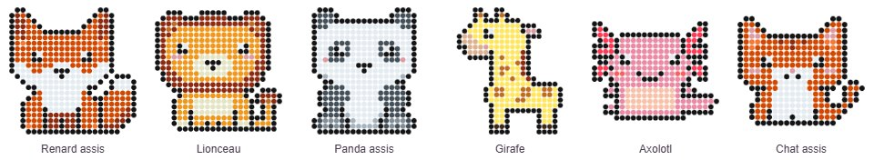
Animaux
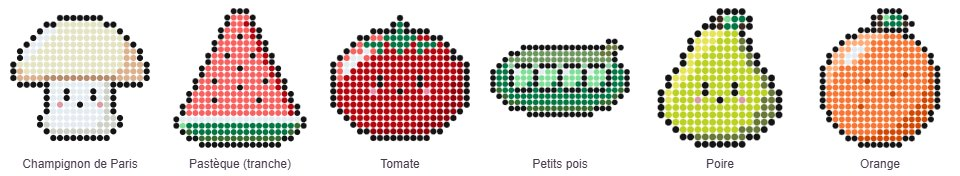
Fruits et légumes
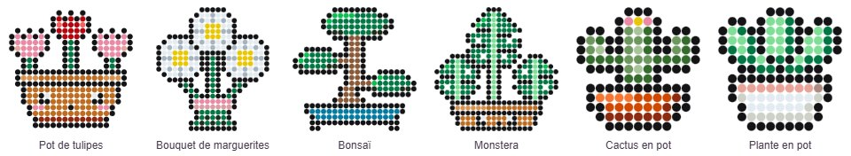
Plantes et fleurs
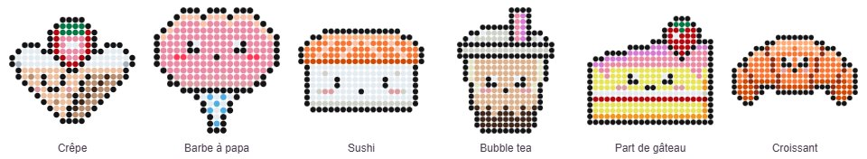
Gourmandises
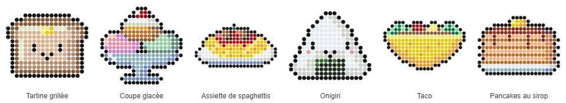
Snacks du monde
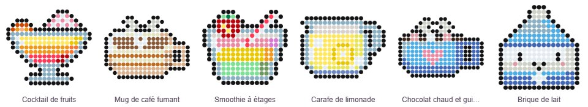
Boissons
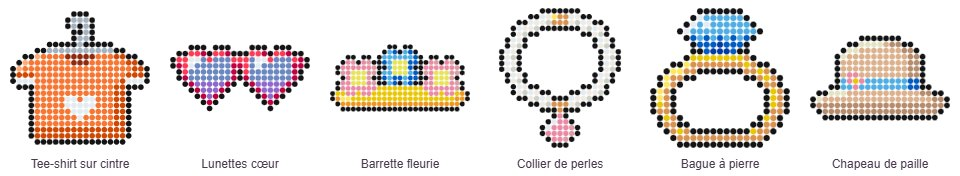
Mode et accessoires
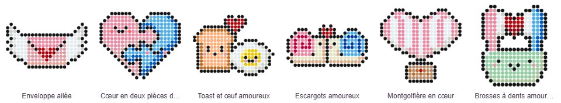
Amour et mariage
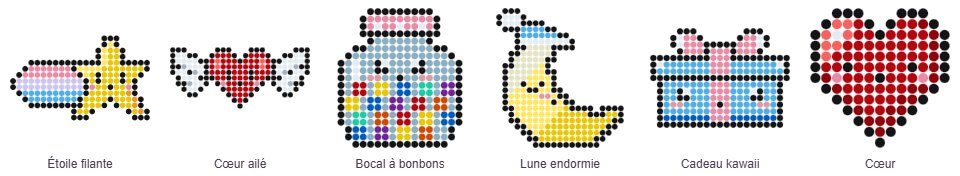
Kawaii
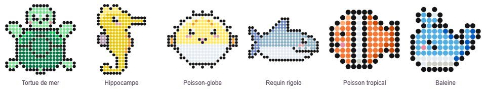
Mer et océan
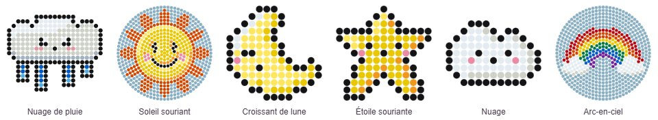
Ciel et météo
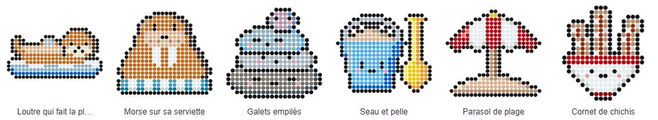
Plage et vacances
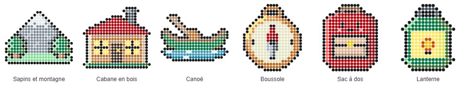
Camping et nature
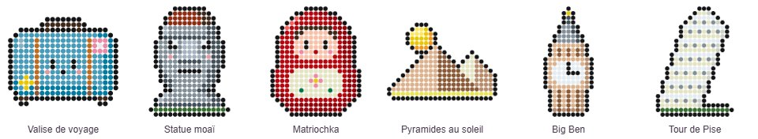
Voyage et monuments
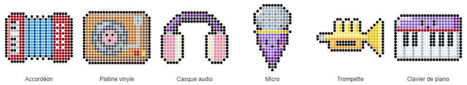
Musique
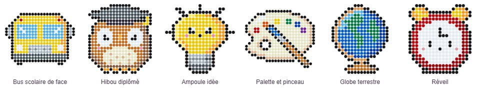
École
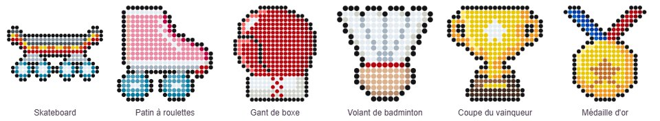
Sport
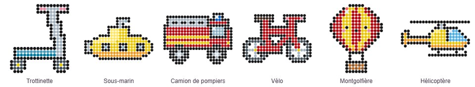
Véhicules
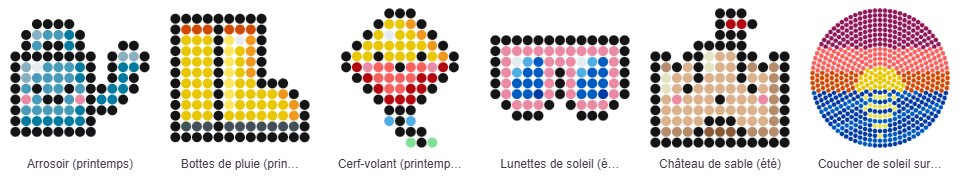
Saisons
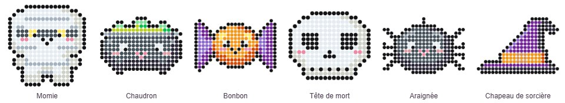
Halloween
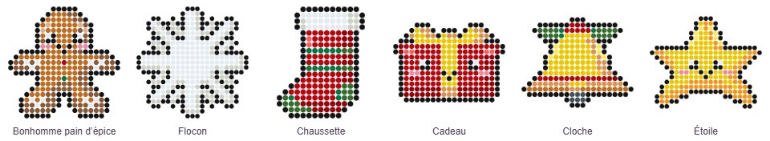
Noël
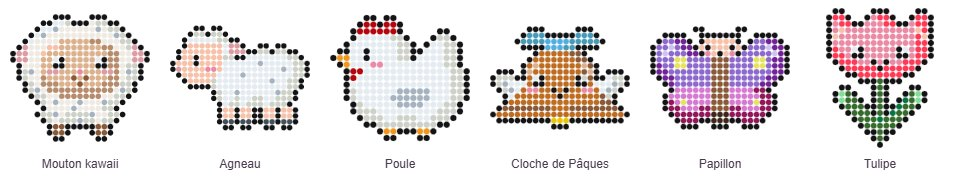
Pâques
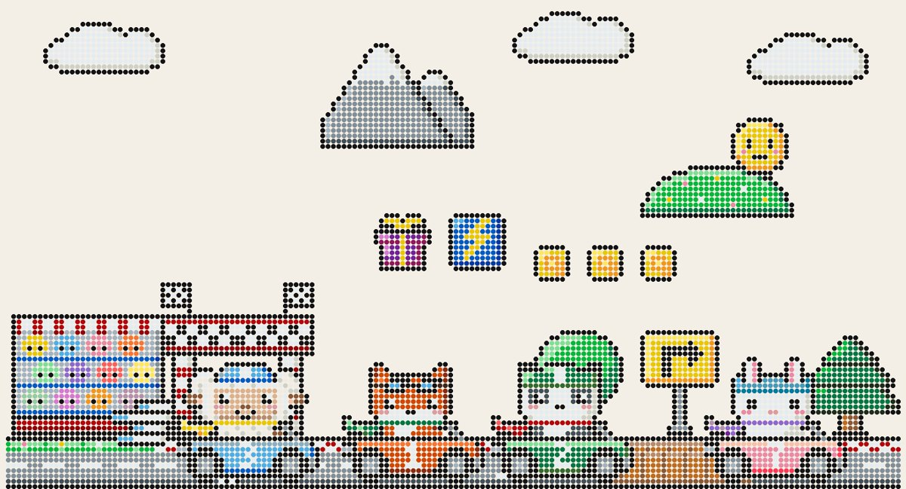
Course de karts — un kit de pièces qui se raccordent pour créer un niveau au mur (règles dans outils/KIT-KARTS.md)
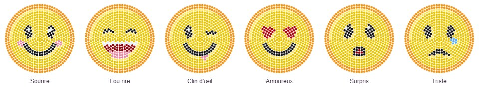
Emoji
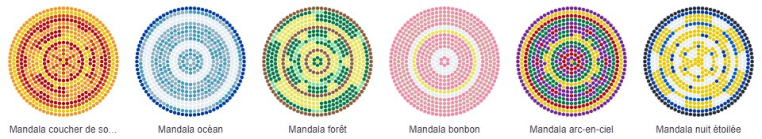
Mandalas
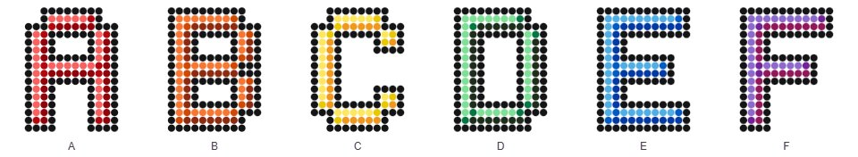
Alphabet — et aussi chiffres, accents et signes
5. Écrire un prénom ou une phrase
Bouton Écrire une phrase, tape ton texte (retour à la ligne = nouvelle ligne). Les accents, les chiffres et ! ? . - ' ♥ sont acceptés.
Choisis le type de pièces :
Une pièce par lettre : jamais coupée, 2 lettres par plaque, chaque plaque se repasse seule ;
Un mot = une pièce : les lettres se soudent entre elles ; plaques assemblées et repassées ensemble (idéal pour une plaque de prénom).
Choisis un jeu de couleurs (arc-en-ciel, pastel, bonbon, princesse, Noël…) ou une seule couleur, et le contour.
L'aperçu à droite montre le résultat et le nombre de plaques. Créer le motif.
Ensuite, l'outil Couleur lettre (cliquer sur une lettre) change la couleur d'une seule lettre, en gardant son relief.
« BRAVO ! » en jeu bonbon : 3 plaques au lieu de 6.
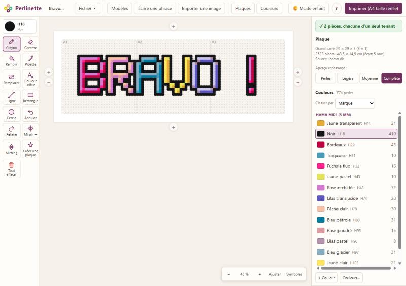
Le même mot avec l'aperçu « fusion complète ».
6. Couleurs et « Mes perles »
Le bouton Couleurs regroupe tout : changer le nuancier du motif (convertir un motif Hama en Artkal, par exemple), ajouter une couleur, garder seulement les couleurs utilisées, couleurs des lettres.
Mes perles (dans Couleurs) : coche les couleurs que tu as chez toi, toutes marques confondues, avec la quantité si tu veux. Perlinette s'en sert pour l'import d'image et te prévient (⚠) quand un motif demande plus de perles que ton stock.
Les noms sont en français ; le nom écrit sur le sachet s'affiche au survol.
7. Transformer une image en motif
Bouton Importer une image, choisis un dessin ou une photo (les dessins simples donnent les meilleurs résultats).
Choisis la plaque et le nombre de plaques, le cadrage, le nombre de couleurs maximum.
Utilise Mes perles pour n'employer que tes couleurs.
Nettoyage (facultatif) : coche ce que tu veux corriger (perles parasites, teintes presque identiques, contour foncé, perles seules qui tomberaient ; « garder les petits détails » protège les yeux et les reflets). Au-dessus de l'aperçu, bascule entre Sans nettoyage et Avec nettoyage : c'est la version affichée qui sera utilisée. Parfois le résultat brut est plus beau, à toi de choisir.
Retouche ensuite au crayon si besoin.
8. Soudure et repassage
Au repassage, deux perles ne fondent ensemble que si elles se touchent par le côté. Une perle seule, ou tenue seulement par un coin (en diagonale sur une plaque carrée), tombera.
La carte en haut à droite indique « ✓ Se soude d'un seul tenant » ou signale le problème ; les perles à risque sont entourées de rouge.
Aperçu repassage : Perles, Légère (trous ouverts, pièce souple), Moyenne (le cas habituel), Complète (surface plate et rigide).
9. Imprimer à taille réelle
Bouton Imprimer : l'aperçu montre toutes les feuilles.
Règle le titre, l'écart entre les picots (Midi 5 mm, Mini 2,5 mm, Maxi 10 mm), les perles en couleur ou à colorier, la légende (sur chaque feuille, en tableau à la fin, ou aucune) et le logo (Perlinette, le tien, ou aucun).
Plusieurs plaques : elles sont regroupées sur une feuille quand elles tiennent, avec une page d'ensemble et des repères A1, A2… avec flèches vers les voisines.
Dans la fenêtre du navigateur, choisis « Taille réelle » / 100 %, jamais « Ajuster à la page ».
Le trait en bas de chaque feuille doit mesurer exactement 5 cm. Sinon, l'imprimante a réduit la page : réimprime en taille réelle.
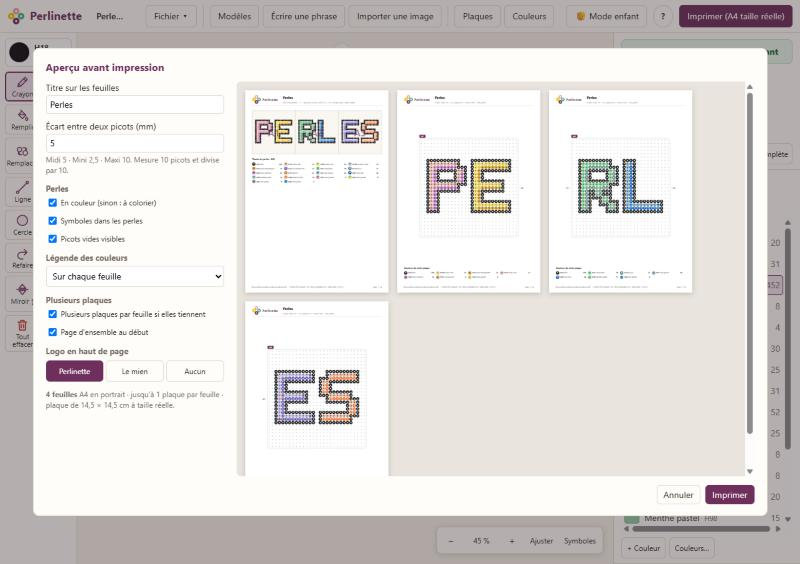
L'aperçu avant impression.Une feuille : logo, plaque à taille réelle, légende, règle de contrôle.
10. Mode enfant
Bouton Mode enfant en haut : il ne reste que Crayon, Gomme, Remplir et Annuler, en gros boutons, et de grandes pastilles de couleur. Les modèles et l'impression restent accessibles. Pour sortir, Perlinette demande une confirmation.
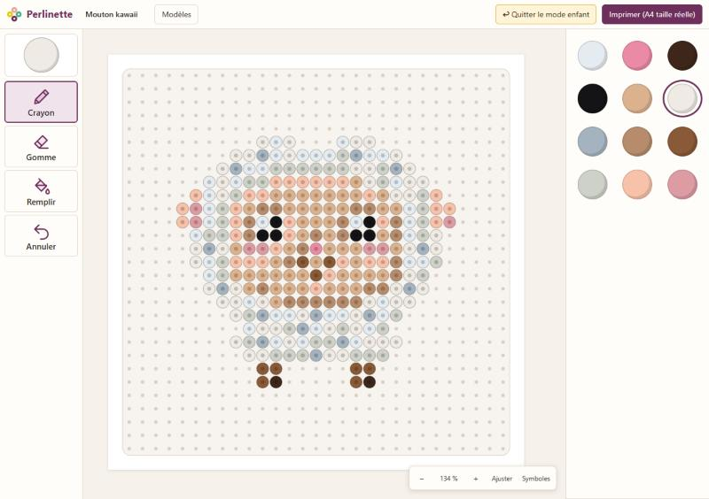
Le mode enfant.
11. Sauvegarder et retrouver ses motifs
Perlinette enregistre tout seul dans le navigateur : Fichier → Ouvrir liste tes motifs.
Fichier → Exporter un fichier crée un fichier .perlinette.json : c'est ta vraie sauvegarde, à ranger où tu veux, et le moyen de passer un motif d'un ordinateur à un autre (Fichier → Importer un fichier).
Fichier → Enregistrer en image PNG pour partager une image du motif.